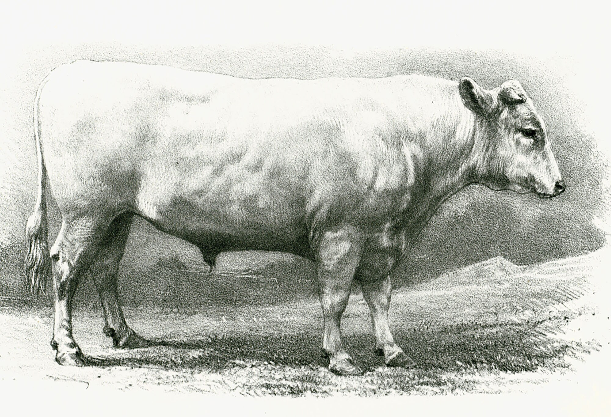
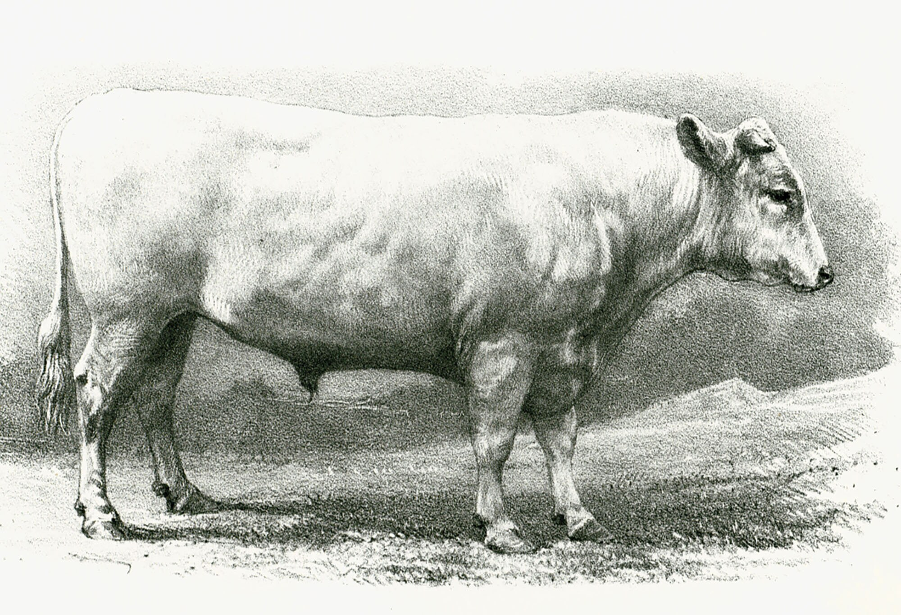

Nuestra Ganaderia Charolais
Historia
La palabra "charolais" proviene del francés, y en español se pronuncia "charolesa". Es una raza originaria de la región de "Charollais", en el departamento de Saône-et-Loire, en Borgoña, al centro-este de Francia. Esta raza se propagó rápidamente por todas las regiones del centro de Francia, pero especialmente hacia las zonas con fuerte actividad agrícola, donde los agricultores se interesaban en utilizarla como animales de tiro y arado debido a su gran resistencia y capacidad de trabajo. Al mismo tiempo, los ganaderos usaban estos animales para el engorde, lo que les permitió ganarse una excelente reputación en las competencias entre ganaderías. La raza fue muy apreciada por su capacidad para producir carne de alta calidad, lo que incrementó su demanda y favoreció su expansión. En 1860, estos animales ya desarrollaban una excelente genética, con una población que alcanzaba las 315.000 cabezas de ganado. Sin embargo, en 1892 la población de la raza "charolesa" llegó a un total de 1.128.000 cabezas, el mayor número de animales de esta raza jamás registrado en el continente europeo. Esto consolidó a la raza como una de las más importantes en la ganadería europea, especialmente en la producción de carne.
Además, la charolesa ha sido una raza clave en la mejora genética de otras razas bovinas a nivel mundial, contribuyendo con sus características de crecimiento rápido, alta eficiencia en la conversión de alimentos y excelente calidad de carne. Su presencia en la ganadería mundial ha sido fundamental para la evolución de la producción cárnica.
 
